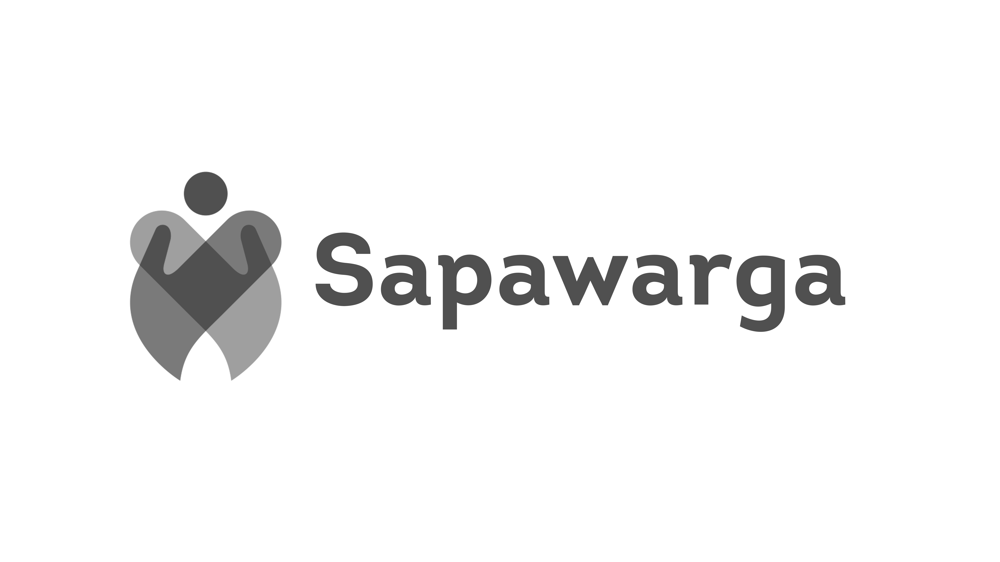

<ion-header>
  <ion-toolbar>
    <ion-buttons slot="start">
      <ion-back-button></ion-back-button>
    </ion-buttons>
    <ion-title>Detail Usulan</ion-title>
    <ion-icon
      *ngIf="isEditable()"
      name="more"
      slot="end"
      size="large"
      (click)="navbarMore($event)"
    ></ion-icon>
  </ion-toolbar>
</ion-header>

<ion-content>
  <div *ngIf="!dataAspirasi">
    <ion-item style="margin-top: 10px;">
      <ion-avatar slot="start">
        <app-skeleton height="100%" width="100%"></app-skeleton>
      </ion-avatar>
      <app-skeleton height="20px" style="width: 80%;"></app-skeleton>
    </ion-item>

    <app-skeleton height="150px" width="100%"></app-skeleton>

    <ion-item>
      <app-skeleton height="20px" style="width: 25%"></app-skeleton>

      <app-skeleton slot="end" height="20px" style="width: 30%"></app-skeleton>
    </ion-item>
    <div padding>
      <app-skeleton slot="end" height="20px" style="width: 100%"></app-skeleton>
      <app-skeleton slot="end" height="20px" style="width: 70%"></app-skeleton>
      <app-skeleton slot="end" height="20px" style="width: 60%"></app-skeleton>
      <app-skeleton slot="end" height="20px" style="width: 50%"></app-skeleton>
    </div>
  </div>

  <div *ngIf="dataAspirasi">
    <ion-item style="margin-top: 10px;">
      <ion-avatar slot="start">
        
      </ion-avatar>
      <ion-text>{{ dataAspirasi.author.name }}</ion-text>
    </ion-item>

    
    

    <ion-item
      class="section-2"
      *ngIf="!myAspirasi && dataAspirasi.status === 10"
    >
      <div class="d-inline-f" slot="start">
        <ion-icon
          name="heart"
          [color]="checkStateLike() ? 'danger' : 'medium'"
          class="icon-heart"
          (click)="doLike()"
        ></ion-icon>
        <p class="text-like">
          {{ checkCountLike() }}
          likes
        </p>
      </div>

      <ion-text slot="end" class="category-text">{{
        dataAspirasi['category']['name']
      }}</ion-text>
    </ion-item>

    <div *ngIf="myAspirasi" style="margin-bottom: 10px">
      <ion-item>
        <div slot="start">
          <ion-text [color]="checkStatus(dataAspirasi.status)">
            {{ dataAspirasi.status_label }}
          </ion-text>
        </div>
        <div slot="end">
          <ion-text class="date-text">{{
            dataAspirasi.updated_at * 1000 | date: 'd MMMM y h:mm'
          }}</ion-text>
        </div>
      </ion-item>
    </div>

    <div
      class="section-desc"
      *ngIf="myAspirasi && (dataAspirasi.status === 3 || dataAspirasi.status === 10)"
    >
      <ion-text class="category-text">{{
        dataAspirasi['category']['name']
      }}</ion-text>
      <h6 style="font-weight: bold;">{{ dataAspirasi['title'] }}</h6>
      <ion-label class="ion-text-justify">{{
        dataAspirasi['description']
      }}</ion-label>

      <div *ngIf="dataAspirasi['approval_note']" class="section-note">
        <h6 style="font-weight: bold;">Catatan</h6>
        <ion-label class="ion-text-justify">{{
          dataAspirasi['approval_note']
        }}</ion-label>
      </div>
    </div>

    <ion-text padding class="location" *ngIf="!myAspirasi">
      {{ dataAspirasi['kabkota']['name'] }},
      {{ dataAspirasi['kecamatan']['name'] }},
      {{ dataAspirasi['kelurahan']['name'] }}
    </ion-text>
  </div>
</ion-content>
